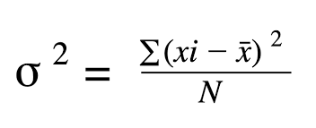

Errors, Measurements, and Linear Regression
I. CASE SCENARIO:
A golf coach runs an experiment to see how launch angle affects driving distance. They test three
angles: 30°, 45°, and 60°. For each angle they perform 10 trials
(measured carry distance in yards). The recorded distances are:
30° trials (m): [ 203.93, 200.19, 200.96, 202.45, 199.05, 199.15, 202.82, 200.86, 198.78, 200.02 ]
45° trials (m): [ 238.08, 238.07, 240.34, 239.62, 241.24, 239.73, 240.03, 240.19, 238.01, 239.41 ]
60° trials (m): [ 190.12, 189.59, 191.75, 188.35, 189.83, 190.01, 188.08, 192.13, 186.44, 188.77 ]
II. TASKS:
1. For ech angle: Compute the mean, variance, and standard deviation.
2. Perform a simple linear regression using angle (in degrees) as the independent variable x
and distance (meters) as the dependent variable y.
3. Based on the sample means and the regression result, which angle looks best to maximize distance?
III. DEFINITION OF TERMS:
1. Mean - The mean is the average value of a set of numbers. It tells us the central or typical value in a data set.
2. Variance - Variance is the expected value of the squared variation of a random variable from its
mean value, in probability and statistics.

3. Standard Deviation - A statistical measure of variability that indicates the average amount that a set of
numbers deviates from their mean.
Estimation of Measurement
A. Scatter Plot
B. Line of Best Fit
Linear Regression
A. Definition of Terms
Linear Regression -
Linear regression is a supervised machine learning algorithm that models the relationship between a dependent variable and
one or more independent variables by fitting a linear equation to observed data.
It is widely used for prediction and forecasting in various fields such as finance, economics, and psychology.
B. Given:
a) x₁= 30° , x₂= 45° , x₃= 60°
-The angles, 30,45, and 60 are the independet variable or x
b) y= trials
-The trials of each angles are the dependet variable or y
C. Unknown:
a) ∑x= ?, ∑y= ?, ∑xy= ?, ∑x² = ?
b) m and b for y = mx + b
c) y = mx + b
D. Solution
Step 1: Find ∑x, ∑y, ∑xy, ∑x² for each angle
| x |
y |
xy |
x² |
| 30° |
203.93 |
6117.9 |
900 |
| 30° |
200.19 |
6005.7 |
900 |
| 30° |
200.96 |
6028.8 |
900 |
| 30° |
202.45 |
6073.5 |
900 |
| 30° |
199.05 |
5971.5 |
900 |
| 30° |
199.15 |
5974.5 |
900 |
| 30° |
202.82 |
6084.6 |
900 |
| 30° |
200.86 |
6025.8 |
900 |
| 30° |
198.78 |
5963.4 |
900 |
| 30° |
200.02 |
6000.6 |
900 |
| ∑ 300 |
∑ 2008.21 |
∑ 60246.3 |
∑ 9000 |
| x |
y |
xy |
x² |
| 45° |
208.08 |
10713.6 |
2025 |
| 45° |
238.07 |
10713.15 |
2025 |
| 45° |
240.34 |
10815.3 |
2025 |
| 45° |
239.62 |
10782.9 |
2025 |
| 45° |
241.24 |
10855.8 |
2025 |
| 45° |
239.73 |
10787.85 |
2025 |
| 45° |
240.03 |
10801.35 |
2025 |
| 45° |
240.19 |
10808.55 |
2025 |
| 45° |
238.01 |
10710.45 |
2025 |
| 45° |
239.41 |
10773.45 |
2025 |
| ∑ 450 |
∑ 2394.72 |
∑ 107762.4 |
∑ 20250 |
| x |
y |
xy |
x² |
| 60° |
190.12 |
11407.2 |
3600 |
| 60° |
189.59 |
11375.4 |
3600 |
| 60° |
191.75 |
11505 |
3600 |
| 60° |
188.35 |
11301 |
3600 |
| 60° |
189.83 |
11389.8 |
3600 |
| 60° |
190.01 |
11400.6 |
3600 |
| 60° |
188.08 |
11284.8 |
3600 |
| 60° |
192.13 |
11527.8 |
3600 |
| 60° |
186.44 |
11186.4 |
3600 |
| 60° |
188.77 |
11326.2 |
3600 |
| ∑ 600 |
∑ 189507 |
∑ 113704.2 |
∑ 36000 |
Step 2: Find the mean of 30°,45°, and 60°
We already calculated for the mean of each angle
Step 3:Find the sum of x, y, xy, and x²
| x (angles) |
y (mean of trials) |
xy |
x² |
| 30° |
200.821 |
60246.3 |
900 |
| 45° |
239.472 |
107762.4 |
2025 |
| 60° |
189.507 |
113704.2 |
3600 |
| ∑ 1350 |
∑ 629.8 |
∑ 281712.90 |
∑ 65250 |
Step 4: Solve for the Linear Regression
Now that we have all the component, we can now substitiute the values.
a) But first, we will find m or the slope
a) Now, we can find b or the y-intercept
c) We now have our equation:
Step 5: Predictions
Through this equation, we can now predict the expected distance of any angle. For example,
if we have a 50° swing what would be it's expected distance?
a) We would just substitute 50° with x
b) Calculate then we will have the expected distance, which is: